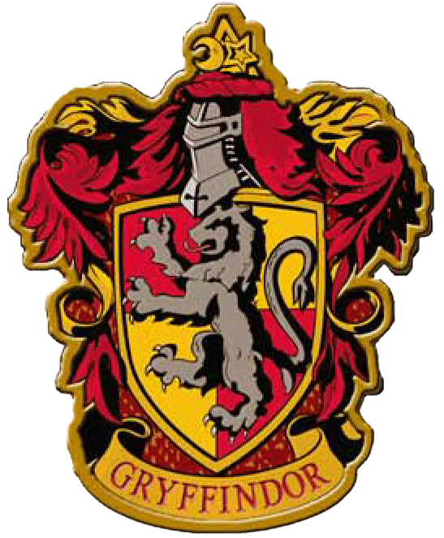

Gryffindor
El fundador de la casa es Godric Gryffindor. Su animal emblemático es el león y sus colores son el rojo escarlata y el dorado. Minerva McGonagall es la más reciente jefa de la casa. Sir Nicholas de Mimsy-Porpington también conocido como "Nick Casi Decapitado" es el fantasma de la casa. Las principales características de los Gryffindor son el coraje y la caballerosidad.
El elemento de Gryffindor es el fuego, ya que se lo asocia al valor y coraje de esta casa. Además, el fuego simboliza el honor en variadas ocasiones, lo cual también puede aplicar para Gryffindor.